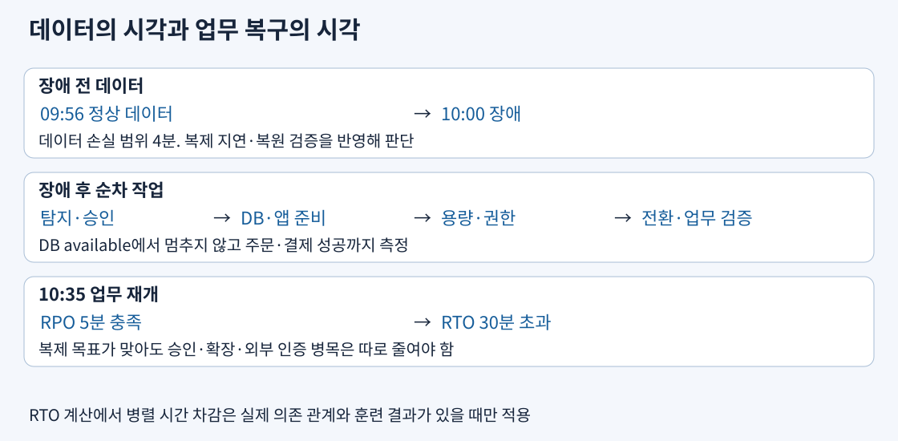
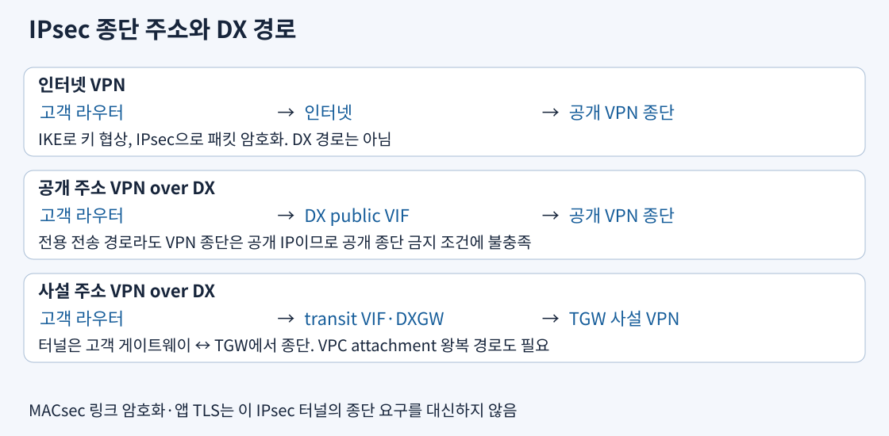

일반 선택 원리는 본문에서 다룬다. 아래의 API 옵션·로그 지표·수치 조건은 원리를 실제 구성에 적용하는 보충 사례이며, 모든 세부 설정이 실제 시험에서 같은 빈도로 출제된다는 뜻은 아니다.
RPO는 장애 시각과 검증된 최신 복원 가능 데이터 시각의 차이이고, RTO는 장애에서 사용자의 핵심 업무가 돌아올 때까지다. 복제 지연 2분은 데이터 계층의 측정값일 뿐 앱 복구 시간을 말하지 않는다. 장애 감지·승인·데이터 복구·인프라 배포·확장·외부 인증·전환·기능 검증을 의존 관계로 연결한다. 병렬 실행을 실제 시험하지 않았다면 단순히 동시에 끝난다고 차감하지 않는다.

예를 들어 10시에 장애, 정상 데이터가 9시 56분, 10시 35분에 주문·결제 성공이면 실제 손실 범위는 4분, 복구 시간은 35분이다. RPO 5분·RTO 30분에서는 데이터 목표만 맞는다. DB가 10시 12분에 available이었어도 앱 연결·쓰기·외부 결제를 확인한 10시 35분이 업무 복구 기준이다. 복구 상태가 available인 DB에 읽기 쿼리만 실행한 훈련은 쓰기 승격·인증·정합성 문제를 놓친다.
RTO 15분인 서비스에서 DB 승격·전환 3분, 0대에서 앱 준비 20분이면 pilot light는 목표를 넘는다. 실행 중인 2대에서 피크 20대로 확장하는 데 8분이면 warm standby는 순차 합계 11분으로 후보가 된다. 피크 용량을 항상 20대 실행하면 더 빨라질 수 있으나 같은 목표를 만족하는 2대보다 상시 비용이 높다. 이 비교에는 복구 리전 할당량·실제 용량·외부 인증이 준비됐다는 전제가 있다. 할당량 증가는 물리 용량 예약과 같지 않으므로 중요한 인스턴스는 지원되는 용량 예약과 대체 유형도 검토한다.
축소 환경이 정상이어도 전환 순간 재시도가 몰리면 DB 연결·결제사 제한이 병목이 된다. 지수 백오프와 지터, 연결 풀 상한, 점진적 유입, 남은 요청 용량을 실제 부하로 시험한다. 운영자가 수동으로 보안 그룹·비밀값을 복사하느라 70분이 걸렸다면 먼저 IaC·복원 절차 자동화와 사전 권한을 고친다. 상시 서버 증설은 수동 승인 병목을 없애지 않는다. DNS 전환은 TTL·리졸버·클라이언트 캐시가 남을 수 있으므로 DNS 동작을 포함해 업무 재개 시간을 측정한다. 주 리전의 로그인·KMS·Secrets Manager만 접근 가능한 절차는 그 리전 장애에서 시작조차 못 하므로 복구 리전에서 독립적으로 운영 인증·키·비밀값을 사용할 경로를 미리 준비한다. 피크 확장에 필요한 서브넷 여유 IP와 서비스 할당량도 축소 대수가 아닌 전체 필요량으로 검증한다. 반대로 앱 준비만 20분이면 절차서만 정리해 15분 목표를 달성했다고 할 수 없다.
복제는 새 변경을 다른 위치에 전달해 손실 시간을 줄인다. 잘못된 SQL도 정상 변경으로 복제되므로, 리전 장애 대비 복제와 수정 전 상태를 남기는 PITR·버전·백업은 함께 필요하다. Multi-AZ 대기로 전환하거나 reader를 승격해도 이미 반영된 잘못된 연락처는 돌아오지 않는다. 사고 직전 시각으로 별도 DB를 복원하고 행 수·금액·참조 관계를 검증한 뒤 필요한 데이터나 앱 연결을 전환한다. 원래 DB를 바로 덮어쓰면 사고 이후의 정상 거래까지 잃을 수 있다.
AWS Backup의 복구 지점 수명 주기와 vault lock의 최소·최대 보존 조건을 구별한다. 새 복사에 90일 보존을 정하고 보관함의 최소를 30일로 설정했다고 30일 뒤 그 복사본을 지울 수 있는 것은 아니다. 복사본의 90일 수명 주기가 적용되고, 최소·최대는 새 작업의 보존 설정을 허용할 경계다. 잠금 전부터 존재하는 복구 지점을 같은 규칙으로 다시 쓴다고 가정하지 않는다.
| 통제 | 관리자의 가능한 행동 | 설계에서 남는 일 |
|---|---|---|
| Governance Vault Lock | 충분한 IAM 권한 보유자는 잠금 제거 가능 | 운영 편의와 관리자 삭제 위협 중 무엇을 막을지 판단 |
| Compliance 유예 시간 중 | 잠금 변경·제거 가능 | 실제 복사·복원과 보존 기간을 시험 |
| Compliance 유예 종료 후 | 복구 지점이 남아 있는 잠금은 고객·AWS도 변경·제거 불가 | 잘못된 무기한 보존은 지속 비용을 만들므로 사전 검증 |
Compliance의 ChangeableForDays가 유예 시간이며 최소 3일이다. 보존 중 삭제 금지는 복원 금지가 아니다. 복원에는 별도의 Backup·대상 서비스 권한과 역할 전달 권한, 유효한 KMS 키가 필요하다. 잠겨 있는 암호화 백업도 키가 영구 삭제되면 데이터 사용을 보장하지 못한다. 키 삭제 방지·모니터링도 같은 복구 설계에 포함한다.
교차 계정 복사는 Organizations의 지원 조건과 신뢰된 액세스, 대상 vault의 backup:CopyIntoBackupVault, 원본·대상 KMS 권한을 확인한다. 완전 관리형 백업인지 원본 서비스 암호화에 의존하는지에 따라 키 조건이 다르다. AWS 관리형 키는 정책을 임의 공유할 수 없으므로 지원되지 않는 조합에서 원본을 고객 관리형 키로 바꿔야 한다. 복사가 성공한 것만 확인하지 말고 보관 계정의 복원 역할로 격리 네트워크에 복원해 키 접근과 앱 읽기·쓰기를 시험한다. 별도 계정은 운영 계정 침해 경계, 별도 리전은 리전 장애 경계이며 하나가 다른 하나를 대신하지 않는다.
출처: Vault Lock, 교차 계정 복사, 백업 암호화, 복원 역할
IPsec은 IP 패킷을 터널로 보호하고 IKE는 상대 인증·암호 알고리즘·키 협상에 사용된다. TCP·UDP 앱을 바꾸지 않고 네트워크 구간을 암호화할 수 있다. TLS는 앱 연결, MACsec은 지원되는 이더넷 링크 보호이므로 보안 요구가 지정한 종단이 서로 다르다.

| 요구 | 연결 경로 | 탈락하는 대안의 이유 |
|---|---|---|
| 인터넷 위 회사망 연결·IPsec | 고객 게이트웨이 → 공개 주소 AWS VPN 종단 | DX 단독은 기본 IPsec 암호화를 제공하지 않음 |
| DX 경로 유지·공개 VPN 종단 허용 | DX public VIF → 공개 주소 VPN 종단 | private VIF 하나만 연결해 IPsec 생성 불가 |
| DX 경로·VPN 종단 공개 IP 금지·IPsec | transit VIF → DX gateway → TGW, private IP VPN | public VIF VPN은 공개 종단 조건 위반, MACsec은 IPsec 조건 불충족 |
Private IP VPN은 TGW와 DX gateway, transit VIF 및 터널용 사설 주소를 구성하는 방식이다. VPC로 향하는 VPN attachment와 VPC attachment의 경로도 필요하다. DX가 10Gbps여도 그 속도가 VPN 단일 흐름에 자동 제공되지 않는다. MACsec은 지원 속도·위치·전용 연결과 고객 장비 조건을 확인해야 하고 모든 hosted connection에 켤 수 있는 스위치가 아니다. 고객에서 DX 위치까지의 링크 보호와 VPN 종단까지 IPsec이라는 요구를 혼동하지 않는다.
VPN 두 터널을 모두 구성해 AWS 터널 점검에 대비한다. 고객 라우터·회선·사업자·DX 위치가 하나면 그 장애는 두 터널이나 두 VIF로 해결되지 않는다. 가용성 요구에 따라 서로 다른 장비·물리 경로·위치·사업자를 나누고 실제 회선 단절을 시험한다. VPN 보조 경로는 BGP 광고·우선순위와 축소 대역폭에서도 필수 업무가 유지되는지 확인한다.
출처: Private IP VPN over DX, 전송 암호화, MACsec, DX 복원력
TGW 라우트 테이블 association은 그 attachment에서 들어온 패킷이 참조할 표를 정하고 propagation은 attachment의 경로를 어느 표에 올릴지 정한다. 운영 VPC와 운영 지사를 운영 표에, 개발 VPC와 개발 지사를 개발 표에 연결한다. 각 표에는 자기 그룹과 공통 서비스 경로만 전파한다. 개발 패킷이 참조하는 표에 운영 CIDR 경로가 없으면 TGW에서 그 경로로 전달되지 않는다. 모든 경로를 한 기본 표에 전파한 뒤 SG만 믿는 방식은 경로 분리 요구를 충족하지 않는다.
흐름은 개발 서브넷 라우트 → 개발 VPC attachment → 연결된 TGW 표 → 공유 DNS attachment → DNS 서브넷이다. 돌아오는 DNS 응답은 공유 attachment의 표에서 개발 CIDR로 갈 수 있어야 한다. VPC 서브넷 경로·SG·NACL도 별도 확인한다. 같은 목적지의 정적·전파 경로 우선순위와 blackhole 경로도 점검한다. 단일 /32 예외 같은 최장 접두사 규칙은 VPC 라우팅에서 적용한다.
동적 BGP VPN을 TGW에 여러 개 붙이고 VPN ECMP를 활성화하면 같은 비용의 경로로 여러 흐름의 합계 처리량을 늘릴 수 있다. 정적 라우팅 VPN은 같은 ECMP 선택의 대체물이 아니다. 한 TCP 흐름은 해시로 한 경로를 따르므로 터널 여러 개의 속도를 합친 단일 흐름 보장은 없다. 앱 병렬 전송과 수신측 처리량을 함께 시험한다. VPC 둘만 저부하로 연결하고 전이 요구가 없다면 직접 peering과 TGW의 attachment·처리 요금을 비교해 허브를 없앨 수도 있다.
출처: TGW 라우트 표, VPN attachment와 ECMP, TGW 요금
초회 전송은 기존 데이터를 옮기고 이후 실행은 원본·대상을 비교해 변경을 옮긴다. 변경만 전송해도 비교·파일 목록 탐색과 메타데이터 작업은 남는다. 검증 옵션은 전송 파일 확인과 전체 데이터 비교 등의 범위 및 모드 지원을 구별해 선택한다. 계속 쓰는 원본의 같은 파일이 복사 중 바뀌면 전송·검증 실패나 서로 다른 시점 데이터가 생길 수 있다. 마지막에는 쓰기를 동결하거나 일관된 스냅샷을 원본으로 사용해 최종 증분·검증·접속 전환을 한다. 파일 무결성 검증은 실행 중 DB 트랜잭션 정합성을 보장하지 않는다.
십진 TB에서는 전송초 = TB × 10¹² × 8 ÷ 실효bps다. 원시 회선 속도만 주어지면 업무 점유율·프로토콜·작은 파일·재시도 여유를 빼 실효속도를 추산한다. 이미 실효속도라고 명시한 수치에 같은 오버헤드를 두 번 빼지 않는다. 80TB를 실효 1Gbps로 보내면 약 7.41일이므로 4일 기한은 초회 전송만으로도 맞지 않는다. 매일 0.2TB 변경이 생기면 그 양과 검증 시간도 추가한다.
다른 예에서 50TB 초회, 하루 0.1TB 변경, 14일 중 검증 1일, 주간 12시간 200Mbps·야간 12시간 800Mbps를 쓸 수 있다면 하루 약 5.4TB, 13일 약 70.2TB다. 51.3TB와 목록·재시도 여유를 비교해 기존 회선 활용을 우선할 수 있다. 종일 200Mbps로 제한하면 13일 28.08TB라 실패한다. DataSync Basic 모드 대역폭 제한은 bytes/sec이므로 200Mbps는 25,000,000B/s이며 주야간에 맞춰 제한값을 변경한다. 지원 모드의 제한 설정을 확인한다.
전송 중 변경 발생률이 남는 전송 처리량보다 크면 언제까지 기다려도 따라잡지 못한다. 초기 전송을 일찍 시작하거나 더 빠른 경로, 변경 창 통제, 지원되는 물리 seed 뒤 증분을 검토한다. Data Transfer Terminal은 현행 신규 이관 대안의 보충 지식이며 이 교재의 공식 목록 서비스에 새 이름을 추가해 출제 우선순위를 단정하는 근거가 아니다. 현장까지 운송·예약·복사·AWS 적재 시간을 포함해야 한다. 예컨대 기준 스냅샷을 장비로 이틀 안에 적재할 예약·운송이 확보됐다면 변경 파일 목록을 따로 추적하고 그 파일만 지원되는 DataSync 필터·manifest 방식으로 전송하는 경로를 시험한다. 단순 증분 비교는 전체 파일 목록을 다시 조사할 수 있어 수십 TB의 메타데이터 탐색 시간을 자동으로 없애지 않는다. 마지막 쓰기 동결 후 삭제·이름 변경을 포함한 최종 차이와 무결성을 확인한다. Transfer Acceleration은 고객 측 1Gbps 회선의 물리 한도를 초과시키는 수단이 아니고, 10일 후 개통될 회선은 4일 기한을 못 맞춘다. Snowball Edge는 기존 고객 조건, Snowcone은 단종 상태여서 신규 고객에게 옛 장비 주문을 전제로 설계하지 않는다.
출처: DataSync 동작, 초회·증분, 대역폭 제한, 검증, Terminal, Snow 변경
NFS 앱을 당분간 유지하며 S3를 원본 보관소로 쓸 때 S3 File Gateway는 로컬 캐시와 NFS/SMB 공유를 제공한다. 쓰기는 로컬에 수신된 뒤 S3로 비동기 업로드되므로 캐시 디스크·업로드 지연을 감시한다. S3 API로 외부에서 파일을 변경해도 게이트웨이의 캐시 메타데이터가 즉시 갱신되는 것은 아니며 새로 고침을 계획한다. 같은 파일을 여러 경로에서 동시에 수정하는 공유 파일시스템으로 가정하지 않는다. 반면 NFS 80TB를 EFS로 옮기고 온프레미스를 정리할 때는 DataSync가 전송·검증을 수행하고 상시 게이트웨이를 남길 필요가 없다.
기존 백업 소프트웨어가 iSCSI 가상 테이프 라이브러리를 요구하면 Tape Gateway, iSCSI 디스크를 요구하면 Volume Gateway다. cached volume은 주 데이터를 AWS에 두고 로컬에 자주 쓰는 블록을, stored volume은 전체 주 데이터를 로컬에 두고 스냅샷을 AWS에 보낸다. NFS 앱에 iSCSI 볼륨만 제시하면 파일 공유가 저절로 생기지 않는다. SFTP 거래처가 S3에 파일을 제출하려는 요구는 Transfer Family가 프로토콜 접점을 제공하며 DataSync가 거래처 로그인 서버를 대신하지 않는다. FTPS·FTP·AS2 등은 대상 저장소·엔드포인트 지원이 동일하지 않으므로 지원표를 확인한다.
DMS의 full load는 기존 행을 옮기고 CDC는 변경 로그를 읽어 새 변경을 적용한다. full-load-only, CDC-only, full-load-and-CDC는 시작 데이터와 로그 위치가 다르다. 소스 PostgreSQL의 논리 복제·WAL, MySQL binlog, Oracle supplemental logging처럼 엔진별 로그·권한·보존 조건을 미리 충족해야 한다. 멈춘 기간보다 로그 보존이 짧으면 재개에 필요한 변경이 없어 재적재가 필요할 수 있다. 테이블 선택 규칙과 이름·열 변환 규칙은 필요한 데이터를 선택하는 도구이지 저장 프로시저 전체를 변환하는 엔진이 아니다.
CDCLatencySource는 소스 변경 수집 지연, CDCLatencyTarget은 대상 반영까지의 지연을 판단하는 근거다. 소스 지연은 1초, 대상 지연은 120초이고 복제 인스턴스 CPU·메모리에 여유, 대상 DB IOPS 포화·쓰기 대기가 높다면 대상 저장 IOPS·처리량을 먼저 개선한다. 복제 인스턴스 메모리만 늘리거나 full load를 재시작하면 관측된 대상 병목을 직접 해결하지 못한다. 반대로 수집 자체가 느리면 소스 로그·네트워크·복제 자원을 조사한다.
전환은 소스 쓰기 통제 → 최종 CDC 지연 해소 → 행·체크섬·합계·시간대·자료형·업무 쿼리 검증 → 대상 쓰기 전환 순서다. 스키마 변환 평가·수동 SQL 수정은 데이터 이동과 별도로 준비한다. “task running”은 모든 테이블 검증 성공이나 전환 안전을 뜻하지 않는다. 되돌리기 시점 이후 대상에 새 쓰기가 생기면 원본으로 DNS만 돌려도 데이터가 일치하지 않으므로 롤백 가능한 창과 역방향 반영 방식을 정한다.
출처: 파일 캐시 새로 고침, 게이트웨이 유형, Transfer 프로토콜, CDC, DMS 지표, 데이터 검증, 스키마 변환
의존 관계 발견은 무엇을 함께 옮길지 조사하는 단계, MGN은 서버 블록을 staging 영역으로 연속 복제하고 테스트·cutover 인스턴스로 부팅하는 단계다. MGN 테스트에서 OS 부팅만 보지 말고 DNS·라이선스·다른 서버 호출·보안 규칙·디스크 동작을 확인한다. MGN은 Oracle SQL을 PostgreSQL로 자동 변환하지 않으며, 서버 이미지 복제 후에도 OS 패치와 앱 가용성은 고객 책임이다. Discovery Service와 Migration Hub는 신규 고객 제공 변경을 확인하며 신규 조사 대안 AWS Transform은 현행 운영을 위한 보충 맥락으로 읽는다.
Outposts rack은 고객 데이터센터에 AWS 장비를 설치해 로컬 EC2·지원 저장소 등을 제공한다. AWS는 장비를 관리하지만 고객은 전원·냉각·물리 접근과 지역 연결을 준비한다. service link의 리전 연결과 local gateway의 로컬 경로를 구별하고 연결 단절 때 지원 서비스의 동작을 확인한다. 공장 시스템의 로컬 지연과 데이터 위치가 핵심이면 후보지만 “완전 독립 리전”이라는 이유로 선택하지 않는다.
Local Zones는 대도시 가까운 AWS 시설에 리전의 일부 서비스와 VPC 서브넷을 확장한다. 고객 시설에 장비를 놓지 않고 사용자와 가까운 컴퓨팅을 원할 때 비교하며 상위 리전 제어·서비스 의존성과 리전 간 데이터 경로를 확인한다. Wavelength는 통신사업자 5G 망에 컴퓨팅을 두고 carrier gateway 등으로 이동통신 단말과 통신해 이동망 지연을 줄이는 구성이다. 일반 사무실 LAN 안에 AWS 장비를 설치하는 Outposts와 배치 위치가 다르다.
VMware Cloud on AWS는 기존 vSphere 도구·VM 운영을 유지하려는 전환 선택지이며 AWS 직접 판매 변경 이후에는 현행 Broadcom/VMware 계약을 확인한다. Proton은 플랫폼팀이 컨테이너·서버리스 환경과 서비스 배포 템플릿을 표준화하던 서비스이며 2026년 10월 7일 지원 종료 일정에 도달했으므로 신규 설계의 기본으로 삼지 않는다. 이 서비스 상태와 새 대안은 시험 목록의 기존 명칭을 해석하기 위한 보충 정보이며 개별 설정의 출제 빈도를 의미하지 않는다.
출처: MGN 동작, Discovery 변경, Outposts 책임, Local Zones, Wavelength, VMware 전환, Proton 지원 종료
공식 자료 확인일: 2026-11-02